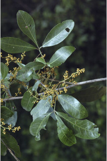
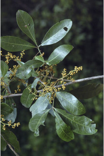
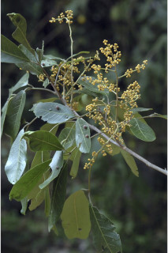
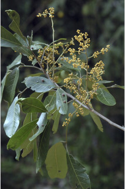

Trees up to 10 m tall.
10 ಮೀ. ಎತ್ತರದವರೆಗೆ ಬೆಳೆಯುವ ಪೊದೆಗಳು.
10 മീറ്റര് വരെ ഉയരമുള്ള മരങ്ങള്.
மரங்கள் 10 மீ. உயரம் வரை வளரக்கூடியது.
Bark greyish brown, lenticellate; blaze reddish brown.
ತೊಗಟೆ ಬೂದು ಮಿಶ್ರಿತ ಕಂದು ಬಣ್ಣದಲ್ಲಿದ್ದು ವಾಯುವಿನಿಮಯ ಬೆಂಡು ರಂಧ್ರಗಳ ಸಮೇತವಿರುತ್ತವೆ;ಕಚ್ಚು ಮಾಡಿದ ಜಾಗ ಕೆಂಪು ಮಿಶ್ರಿತ ಕಂದು ಬಣ್ಣದಲ್ಲಿರುತ್ತದೆ.
ശ്വസനരന്ധ്രങ്ങളുള്ള, ചാരകലര്ന്ന തവിട്ട് നിറത്തിലുള്ള പുറംതൊലി; വെട്ട്പാടിന് ചുവപ്പുകലര്ന്ന തവിട്ട് നിറം.
மரத்தின் பட்டை சாம்பல் கலந்த ப்ரவுன் நிறமானது, லெண்டிசெல்லேட்; உள்பட்டை சிவப்பு கலந்த ப்ரவுன் நிறமானது.
Young branchlets terete, densely lepidote_scaly.
ಎಳೆಯ ಕಿರುಕೊಂಬೆಗಳು ದುಂಡಾಗಿದ್ದು ದಟ್ಟವಾದ ಸೂಕ್ಷ್ಮವಾದ ಹೊಟ್ಟು ರೂಪದ ಶಲ್ಕೆಗಳಿಂದ ಕೂಡಿರುತ್ತವೆ.
ഇളം ഉപശാഖകള്, ഉരുണ്ടതും കനത്തില് പരുക്കന് ശല്ക്കിതവുമാണ്.
சிறிய நுனிக்கிளைகள் குறுக்குவெட்டுத் தோற்றத்தில் வளையமானது, அடர்த்தியாக லெப்பிடோட் செதில்களுடையது.
White latex, not profuse.
ಸಸ್ಯ ಕ್ಷೀರ ಬಿಳಿ ಬಣ್ಣದಲ್ಲಿದ್ದು ವಿಫುಲವಾಗಿರುವುದಿಲ್ಲ.
സമൃദ്ധമല്ലാത്ത, വെളുത്ത സ്രവം.
வெள்ளை நிறமானது, குறைந்தளவே உண்டாகின்றன
Leaves compound, imparipinnate, alternate, spiral; rachis 1.5-3.5 cm, slightly canaliculate above, lepidote_scaly; leaflets 2-3 opposite or subopposite pairs with one at terminal, 3-7 x 1-3 cm, narrow elliptic to oblanceolate, apex bluntly acute to subacuminate, sometimes obtuse, base acute to cuneate, chartaceous, young leaves densely lepidote_scaly, glabrous when mature; midrib slightly raised above, secondary_nerves 8-13 pairs; tertiary_nerves very slender, broadly reticulate.
ಎಲೆಗಳು ಬೆಸ ಸಂಖ್ಯೆಯ ಸಂಯುಕ್ತಪರ್ಣಿಗಳಾಗಿದ್ದು ಪರ್ಯಾಯ ಮತ್ತು ಸುತ್ತು ಜೋಡನಾ ವ್ಯವಸ್ಥೆಯಲ್ಲಿರುತ್ತವೆ;ಅಕ್ಷದಿಂಡು 1.5 - 3.5 ಸೆಂ.ಮೀ. ಉದ್ದವಿದ್ದು ಮೇಲ್ಭಾಗದಲ್ಲಿ ತುಸು ಕಾಲುವೆಗೆರೆಯನ್ನು ಹೊಂದಿರುತ್ತದೆ ಮತ್ತು ಹೊಟ್ಟು ರೂಪದ ಶಲ್ಕೆಗಳ ಸಮೇತವಿರುತ್ತದೆ;ಕಿರುಪತ್ರಗಳು 2 ರಿಂದ 3 ಜೋಡಿಗಳಿದ್ದು ಅಭಿಮುಖಿ ಅಥವಾ ಉಪ ಅಭಿಮುಖಿಗಳಾಗಿದ್ದು ತುದಿಯಲ್ಲಿ ಒಂದು ಕಿರುಪತ್ರದ ಸಮೇತವಿರುತ್ತದೆ, ಕಿರುಎಲೆಗಳು 3-7 X 1-3 ಸೆಂ.ಮೀ. ಗಾತ್ರ ಹೊಂದಿದ್ದು ಸಂಕುಚಿತ- ಅಂಡವೃತ್ತದಿಂದ ಬುಗುರಿ-ಭರ್ಜಿವರೆಗಿನ ಆಕಾರದಲ್ಲಿದ್ದು ಮೊಂಡಾಗ್ರವುಳ್ಳ ಚೂಪಾದ ಮಾದರಿಯಿಂದ ಉಪ-ಕ್ರಮೇಣವಾಗಿ ಚೂಪಾಗುವ ರೀತಿಯ ತುದಿ ಹೊಂದಿದ್ದು ಕೆಲವು ವೇಳೆ ಚೂಪಲ್ಲದ ಮಾದರಿಯ ತುದಿಯನ್ನು ಹೊಂದಿರುತ್ತವೆ;ಪತ್ರದ ಬುಡ ಚೂಪಾದ ರೀತಿಯಿಂದ ಬೆಣೆಯಾಕಾರದವರೆಗಿನ ಮಾದರಿಯಲ್ಲಿರುತ್ತದೆ; ಪತ್ರಗಳು ಕಾಗದವನ್ನೋಲುವ ಮಾದರಿಯಲ್ಲಿರುತ್ತವೆ;ಎಳೆಯದಾದ ಎಲೆಗಳು ದಟ್ಟವಾದ ಹೊಟ್ಟು ರೂಪದ ಶಲ್ಕೆಗಳಿಂದ ಕೂಡಿರುತ್ತದೆ ಮತ್ತು ಬಲಿತಾಗ ರೋಮರಹಿತವಾಗಿರುತ್ತವೆ; ಮಧ್ಯನಾಳ ಕೊಂಚ ಮೇಲೆದ್ದಿರುತ್ತದೆ; ಎರಡನೇ ದರ್ಜೆಯ ನಾಳಗಳು 8-13 ಜೋಡಿಗಳಿರುತ್ತವೆ; ಮೂರನೇ ದರ್ಜೆಯ ನಾಳಗಳು ಅತಿ ತೆಳುವಾಗಿದ್ದು ವಿಶಾಲ ಜಾಲ ಬಂಧ ನಾಳ ವಿನ್ಯಾಸದಲ್ಲಿರುತ್ತವೆ.
ഇലകള് ഏകാന്തര ക്രമത്തില്, സര്പ്പിളമായടുക്കിയ, അസമപിച്ഛക ബഹുപത്രങ്ങളാണ്; മുകളില് ലഘുവായി ചാലുള്ള, പരുക്കന് ശല്ക്കിതമായ മുഖ്യാക്ഷത്തിന് 1.5 സെ.മീ മുതല് 3.5 സെ.മീ വരെ നീളം; അറ്റത്ത് ഒറ്റയായുള്ള 2 ഓ 3 ഓ സമ്മുഖമോ ഉപസമ്മുഖമോ ജോഡികളായുള്ള പത്രകങ്ങള്; പത്രകഫലകത്തിന് 3 സെ.മീ മുതല് 7 സെ.മീ വരെ നീളവും 1 സെ.മീ മുതല് 3 സെ.മീ വരെ വീതിയും, ആകൃതി വീതി കുറഞ്ഞ ദീര്ഘവൃത്തം തൊട്ട് അപകുന്താകാരം വരെയുമാണ്, മുനപ്പില്ലാത്ത നിശിതം തൊട്ട് ഉപദീര്ഘാഗ്രം വരെ ആയ പത്രാഗ്രം, ചിലപ്പോള് ഉപകോണാകാരമാണ്, പത്രാധാരം നിശിതം തൊട്ട് ആപ്പാകാരം വരെയാണ്, കടലാസ് പോലത്തെ പ്രകൃതം, ഇളം ഇലകള് കനത്തില് പരുക്കന് ശല്ക്കിതമാണ്, മൂക്കുമ്പോള് അരോമിലമാണ്; മുഖ്യസിര മുകളില് ചെറുതായി ഉയര്ന്നതാണ്, 8 മുതല് 13 വരെ ജോഡി ദ്വിതീയ ഞരമ്പുകള്; വളരെ നേര്ത്ത, വീതിയേറിയ ജാലിതമായ ത്രിതീയ ഞരമ്പുകള്.
இலைகள் கூட்டிலைகள், ஒற்றைபடை சிறகுவடிவக்கூட்டிலைகள், மாற்றுஅடுக்கமானவை, சுழல் போல் அமைந்தது; கூட்டிலையின் மத்தியகாம்பு (ராக்கிஸ்) 1.5-3.5 செ.மீ. நீளமானது, குறுக்குவெட்டுத் தோற்றத்தில் சிறிது கேனாலிகுலேட், லெப்பிடோட் செதில்களுடையது; சிற்றிலைகள் 2-3, எதிரேமைந்தது அல்லது கிட்டதட்ட எதிராகமைந்தது, நுனியில் ஒர் சிற்றிலை மட்டும் உடையது, சிற்றிலையின் அலகு 3-7 X 1-3 செ.மீ. குறுகிய-நீள்வட்டம் முதல் தலைகீழ் ஈட்டி வடிவானது, அலகின் நுனி கூரியது (மற்றும் அதன் முனை மழுங்கியது) முதல் கிட்டதட்ட அதிக்கூரியது, சிலசமயங்களில் மழுங்கியவை, அலகின் தளம் கூரியது முதல் ஆப்பு வடிவானது, சார்ட்டேசியஸ், குறுத்து இலைகள் அடர்த்தியாக லெப்பிடோட் செதில்கள் உடையவை, முதிர்ந்த இலைகளில் செதில்கள் உதிர்ந்துவிடுகின்றன; மையநரம்பு அலகின் மேற்பரப்பைவிட சிறிதளவு உயர்ந்தது; இரண்டாம் நிலை நரம்புகள் 8-13 ஜோடிகள்; மூன்றாம் நிலை நரம்புகள் மெல்லியவை, அகன்ற வலைப்பின்னல் போன்றவை.
Inflorescence axillary panicles, shorter than leaves, lepidote_scaly.
ಪುಷ್ಪಮಂಜರಿಗಳು ಅಕ್ಷಾಕಂಕುಳಿನಲ್ಲಿದ್ದು ಪುನರಾವೃತ್ತಿಯಾಗಿ ಕವಲೊಡೆಯುವ ಮಾದರಿಯಲ್ಲಿದ್ದು ಎಲೆಗಳಿಗಿಂತ ಗಾತ್ರದಲ್ಲಿ ಚಿಕ್ಕದಾಗಿರುತ್ತವೆ ಹಾಗೂ ಹೊಟ್ಟು ರೂಪದ ಶಲ್ಕೆಗಳಿಂದ ಕೂಡಿರುತ್ತವೆ.
പരുക്കന് ശല്ക്കിതമായ, പൂങ്കുലകള്, ഇലകളേക്കാള് ചെറുതായ, കക്ഷീയ പാനിക്കിളുകളാണ്.
மஞ்சரி இலைக்கோணங்களில் காணப்படும், பேனிக்கிள், கூட்டிலையின் நீளத்தை விட குறைந்தது லெப்பிடோட் செதில்களுடையவை.
Berry, nearly globose, lepidote_scaly, to 1.5 cm across, not depressed at apex, 2 loculed; seeds 1 per locule.
ಬೆರ್ರಿಗಳು ಹೆಚ್ಚೂ ಕಡಿಮೆ ಗೋಳಾಕಾರದಲ್ಲಿದ್ದು ಹೊಟ್ಟು ರೂಪದ ಶಲ್ಕೆಗಳಿಂದ ಕೂಡಿದ್ದು 1.5 ಸೆಂ.ಮೀ. ಅಡ್ಡಗಳತೆಯನ್ನು ಹೊಂದಿದ್ದು ಹಾಗೂ ಅಗ್ರದಲ್ಲಿ ಅದುಮಿಕೊಂಡಿರುವುದಿಲ್ಲ;ಕೋಶಗಳು ಎರಡಿದ್ದು ಪ್ರತಿ ಕೋಶದಲ್ಲಿ 1 ಬೀಜ ಇರುತ್ತದೆ.
ഓരോ അറയിലും ഓരോ വിത്തുവീതമുള്ള, 2 അറകളുള്ള കായ, പരുക്കന് ശല്ക്കിതമായ 1.5 സെ.മീ കുറുകേയുള്ളതും, അറ്റം കുഴിയാത്തതുമായ, ഏതാണ്ട് ഗോളാകാരത്തിലുള്ള ബെറിയാണ്.
முழுச்சதைகனி (பெர்ரி), கோள வடிவம் போன்றது, லெப்பிடோட் செதில்களுடையவை, 1.5 செ.மீ. குறுக்களவுடையது, கனியின் நுனி குழிந்தது, 2 அறைகளுடையது, அறைக்கு ஓர் விதையுடையது.

 



 
